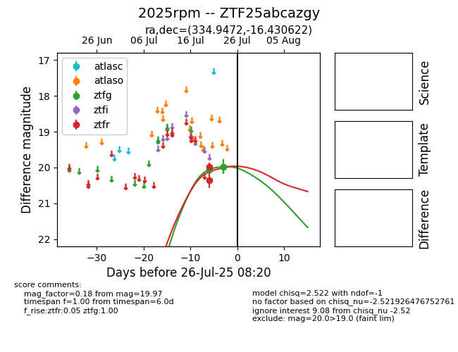

Target 2025rpm at 2025-07-26 08:20, see:
FINK: fink-portal.org/2025rpm
Lasair: lasair-ztf.lsst.ac.uk/objects/2025rpm
ALeRCE: alerce.online/object/2025rpm
TNS: wis-tns.org/object/2025rpm
YSE: ziggy.ucolick.org/yse/transient_detail/2025rpm
alt names
ZTF25abcazgy (ztf,fink)
2025rpm (tns,yse)
coordinates:
equatorial (ra, dec) = (334.9472,-16.43062)
galactic (l, b) = (41.9297,-53.36578)
photometry
last ztfg=19.97, ztfr=20.35
2 ztfg, 2 ztfr detections
